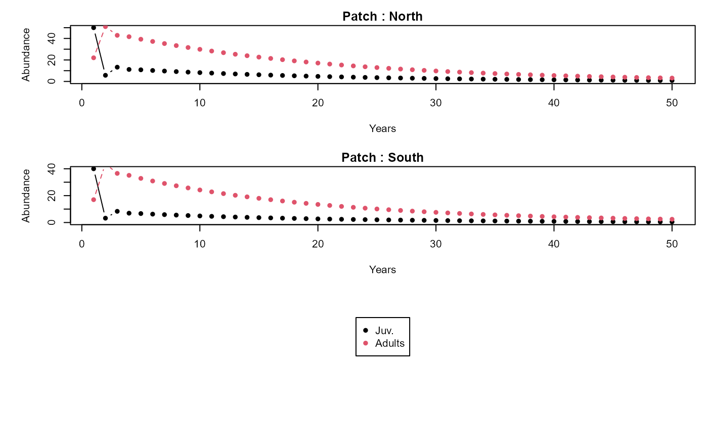

Getting started with the `metapopbio` package
Caleb A. Aldridge
2023-09-06
Source:vignettes/getting-started.Rmd
getting-started.Rmd
# devtools::install_github("AldridgeCaleb/meta-pop-bio")
library(metapopbio)About
The metapopbio
package is inspired by and complements the fuctionalities of the popbio
package. Users can construct and analyze projection matrix models for
metapopulations classified by age or stage and located in distinct
patches.
The functionality to date is largely based on Hunter and Caswell (2005) to construct and analyze spatial matrix population models using the vec-permutation matrix. This model extends the Leslie matrix (Leslie 1945) to include dispersal rates between patches. An analogous approach was taken by Lebreton (1996) and called the “renewal equation approach.”
Current plans include support for classic metapopulation models of Gotelli (1991; 2008) and others, i.e., \(\frac{df}{dt}=p_{i}(1-f)-p_{e}f\), \(\frac{df}{dt}=p_{i}(1-f)-ef(1-f)\), \(\frac{df}{dt}=if(1-f)-p_{e}f\), and \(\frac{df}{dt}=if(1-f)-ef(1-f)\), and hyperstate matrix models (Roth and Caswell 2016). Additionally, Hanski’s (1994) incidence function \(J_{i}=\frac{1}{1+\Bigl(1+\bigl[\frac{y'}{S_{i}}\bigr]^2\Bigr)\frac{e}{A_{i}^x}}\) and a metapopulation version of the Susceptible–Infected–Recovered model (SIR model) are also being considered. Other suggestions can be submitted in email to caleb.a.aldridge@gmail.com or as an issue on the package’s GitHub repository (https://github.com/AldridgeCaleb/meta-pop-bio/issues).
Examples
The following two examples come from Hunter and Caswell (2005) using peregrine falcon (Falco peregrinus) data from Wootton and Bell (1992) and black-headed gull (Larus ridibundus) data from Lebrenton (1996).
The peregrine falcon
1. Patches, stages, and grouping
First, we define the number of patches (discrete locations) and stages (age, class, or size). In this example there are two “patches”, Northern California and Southern California, and two life-stages, juvenile and adult. We also group or will project stages within patches1.
n_patches <- 2
n_stages <- 2
group_by <- "patches"2. Construct vec-permutation matrix
Next, we construct the vec-permutation matrix. Essentially, the
vec-permutation matrix helps us relate demographic and dispersal
parameters so that populations in patches are projected considering
births, immigration, deaths, and emigration (BIDE) or recruitment,
immigration, survival, and emigration (RISE). The
metapopbio::vec.perm function helps us to easily construct
a vec-permutation matrix.
(P <-
metapopbio::vec.perm(stages = n_stages,
patches = n_patches,
group_by = group_by))
#> [,1] [,2] [,3] [,4]
#> [1,] 1 0 0 0
#> [2,] 0 0 1 0
#> [3,] 0 1 0 0
#> [4,] 0 0 0 13. Demographic parameters for each patch
We now specify transition probabilities from one stage to the next (survival s and recruitment r). Numbers in object names indicate patch then stage. Only adults are assumed to reproduce.
Northern first.
# Northern
r11 <- 0.00
r12 <- 0.26
s11 <- 0.72
s12 <- 0.77Now Southern.
# Southern
r21 <- 0.00
r22 <- 0.19
s21 <- 0.72
s22 <- 0.774a. Structure demographic parameters
Now we will construct demographic (Leslise-style) matrices for each of the patches. This is just placing the demographic parameters from above into an ordered matrices for analysis and projecting.
4b. Construct block diagonal matrix
Along with the vec-permutation matrix, spatial matrix population
models use a matrix of matrices for analysis and projection of
population demographics and movement. We accomplish this using the
metapopbio::blk.diag function.
(BB <- metapopbio::blk.diag(B1x, B2x))
#> [,1] [,2] [,3] [,4]
#> [1,] 0.00 0.26 0.00 0.00
#> [2,] 0.72 0.77 0.00 0.00
#> [3,] 0.00 0.00 0.00 0.19
#> [4,] 0.00 0.00 0.72 0.775. Structure movement parameters
Similar to the above, we will construct movement or dispersal matrices for each of the stages. This is just placing movement parameters into an ordered matrices for analysis and projecting. We assume that only juveniles disperse, therefore an idenity matrix is specified for adult movement.
# Juveniles
dx1 <- 0.27
dx2 <- 1 - dx1
(Mx1 <- matrix(c(dx2, dx1, dx1, dx2),
nrow = n_patches,
ncol = n_patches,
byrow = TRUE))
#> [,1] [,2]
#> [1,] 0.73 0.27
#> [2,] 0.27 0.73
# Adults
(Mx2 <- diag(
x = 1,
nrow = n_patches,
ncol = n_patches
))
#> [,1] [,2]
#> [1,] 1 0
#> [2,] 0 1
# Block diagonal matrix
(MM <- metapopbio::blk.diag(Mx1, Mx2))
#> [,1] [,2] [,3] [,4]
#> [1,] 0.73 0.27 0 0
#> [2,] 0.27 0.73 0 0
#> [3,] 0.00 0.00 1 0
#> [4,] 0.00 0.00 0 16. Construct projection matrix
Now we can use the vec-permutation matrix and block diagonal matrices
to construct a population projection matrix. This is accomplished
through matrix multiplication. The order of matrices is very important
(see Hunter and Caswell 2005 or function documentation for more detail),
but the metapopbio::meta.pop.A function makes it much more
convenient and reduces the probability of calculation errors. All that’s
needed is to specify the grouping (structure) for the projection (stages
within patches here) and the order type between demographic and movement
/ dispersal processes (here, dispersal then deomgraphics), then supply
the matrices we have constructed (P, BB, and MM).
group_by <- "patches"
type <- "move"
(A <-
metapopbio::meta.pop.A(
P = P,
BB = BB,
MM = MM,
group_by = group_by,
type = type
))
#> [,1] [,2] [,3] [,4]
#> [1,] 0.0000 0.26 0.0000 0.00
#> [2,] 0.5256 0.77 0.1944 0.00
#> [3,] 0.0000 0.00 0.0000 0.19
#> [4,] 0.1944 0.00 0.5256 0.777. Project
Now we can project populations into future time steps. First, we have to indicate the starting, initial, or current sizes of each stage by patch, or vice versa if grouping by stages. An added step is to comment on the vector which ensures projection calculations are correct.
n <- c(
50, 22, # Northern patch adults then juveniles
40, 17 # Southern patch adults then juveniles
)
comment(n) <- "patches" # vector attr for group_by Now we indicate the number of time steps we would like to project.
n_timesteps <- 50And, finally we can project stages within patches using the
metapopbio::meta.pop.proj function.
head(
projs <-
metapopbio::meta.pop.proj(
n = n,
A = A,
n_timesteps = n_timesteps,
n_stages = n_stages,
n_patches = n_patches
)
)
#> [1] "Deterministic spatial matrix model projections for patches structured population vector and movement then demography A projection matrix."
#> 1 2 3 4 5 6 7 8
#> [1,] 50 5.720 13.25896 11.154329 10.821703 10.208134 9.676265 9.161220
#> [2,] 22 50.996 42.90126 41.621935 39.262053 37.216402 35.235463 33.358700
#> [3,] 40 3.230 8.32846 6.946749 6.670443 6.241967 5.872162 5.521961
#> [4,] 17 43.834 36.56184 35.107594 32.852460 30.906118 29.062950 27.345946
#> 9 10 11 12 13 14 15
#> [1,] 8.673262 8.209449 7.769142 7.351297 6.954951 6.579141 6.222929
#> [2,] 31.574806 29.881317 28.274221 26.749810 25.304389 23.934343 22.636151
#> [3,] 5.195730 4.890536 4.604935 4.337412 4.086636 3.851388 3.630565
#> [4,] 25.739662 24.236498 22.828486 21.508609 20.270465 19.108236 18.016617
#> 16 17 18 19 20 21 22
#> [1,] 5.885399 5.565661 5.262854 4.976147 4.70474 4.447862 4.204778
#> [2,] 21.406390 20.241748 19.139028 18.095152 17.10716 16.172222 15.287615
#> [3,] 3.423157 3.228244 3.044981 2.872594 2.71037 2.557653 2.413835
#> [4,] 16.990757 16.026216 15.118916 14.265106 13.46133 12.704396 11.991352
#> 23 24 25 26 27 28 29
#> [1,] 3.974780 3.757194 3.551374 3.356706 3.172603 2.998508 2.833890
#> [2,] 14.450744 13.659130 12.910407 12.202320 11.532725 10.899578 10.300941
#> [3,] 2.278357 2.150698 2.030376 1.916942 1.809980 1.709102 1.613943
#> [4,] 11.319461 10.686187 10.089169 9.526213 8.995272 8.494439 8.021932
#> 30 31 32 33 34 35 36 37
#> [1,] 2.678245 2.531092 2.391976 2.260466 2.136152 2.018645 1.907577 1.802598
#> [2,] 9.734968 9.199909 8.694102 8.215971 7.764021 7.336835 6.933070 6.551456
#> [3,] 1.524167 1.439456 1.359514 1.284064 1.212846 1.145616 1.082145 1.022218
#> [4,] 7.576085 7.155338 6.758233 6.383400 6.029557 5.695499 5.380094 5.082281
#> 38 39 40 41 42 43 44
#> [1,] 1.7033785 1.6096043 1.5209792 1.4372223 1.3580681 1.2832649 1.2125748
#> [2,] 6.1907857 5.8499199 5.5277782 5.2233387 4.9356341 4.6637491 4.4068179
#> [3,] 0.9656334 0.9122012 0.8617429 0.8140905 0.7690857 0.7265795 0.6864318
#> [4,] 4.8010591 4.5354892 4.2846867 4.0478192 3.8241028 3.6127990 3.4132121
#> 45 46 47 48 49 50
#> [1,] 1.1457726 1.0826456 1.0229921 0.9666217 0.9133544 0.8630197
#> [2,] 4.1640214 3.9345850 3.7177760 3.5129015 3.3193064 3.1363713
#> [3,] 0.6485103 0.6126904 0.5788547 0.5468924 0.5166992 0.4881764
#> [4,] 3.2246864 3.0466038 2.8783813 2.7194693 2.5693493 2.42753218. Plotting
stage_names <- c("Juv.", "Adults")
patch_names <- c("North", "South")
metapopbio::meta.pop.plot(
projections = projs,
ylabs = "Abundance",
xlabs = "Years",
stage_names = stage_names,
patch_names = patch_names
)
9. Sensitivity and elasticity analyses
metapopbio::sens.A(A)
#> [,1] [,2] [,3] [,4]
#> [1,] 0.10867018 0.3949167 0.06141440 0.3054113
#> [2,] 0.16158007 0.5871958 0.09131616 0.4541115
#> [3,] 0.08404076 0.3054113 0.04749521 0.2361917
#> [4,] 0.09131616 0.3318507 0.05160687 0.2566388
metapopbio::eigen.lambda(A)
#> $eig
#> eigen() decomposition
#> $values
#> [1] 0.94486220 0.85353422 -0.17486220 -0.08353422
#>
#> $vectors
#> [,1] [,2] [,3] [,4]
#> [1,] 0.2111729 -0.1455690 -0.6997575 0.5681052
#> [2,] 0.7674202 -0.4778775 0.4706197 -0.1825239
#> [3,] 0.1193433 0.1882302 -0.3954644 -0.7345971
#> [4,] 0.5934892 0.8455839 0.3639567 0.3229684
#>
#>
#> $lambda
#> [1] 0.9448622
#>
#> $v
#> [1] 0.2111729 0.7674202 0.1193433 0.5934892
#>
#> $eig_t
#> eigen() decomposition
#> $values
#> [1] 0.94486220 0.85353422 -0.17486220 -0.08353422
#>
#> $vectors
#> [,1] [,2] [,3] [,4]
#> [1,] -0.4706197 -0.1825239 -0.7674202 -0.4778775
#> [2,] -0.6997575 -0.5681052 0.2111729 0.1455690
#> [3,] -0.3639567 0.3229684 -0.5934892 0.8455839
#> [4,] -0.3954644 0.7345971 0.1193433 -0.1882302
#>
#>
#> $w
#> [1] -0.4706197 -0.6997575 -0.3639567 -0.3954644
metapopbio::sens.BB(BB, A, P, MM)
#> [,1] [,2] [,3] [,4]
#> [1,] 0.10202024 0.16158007 0.09069071 0.09131616
#> [2,] 0.37075026 0.58719578 0.32957777 0.33185072
#> [3,] 0.05765622 0.09131616 0.05125339 0.05160687
#> [4,] 0.28672202 0.45411152 0.25488102 0.25663882
metapopbio::elas.BB(BB, A, P, MM)
#> [,1] [,2] [,3] [,4]
#> [1,] 0.0000000 0.04446238 0.0000000 0.0000000
#> [2,] 0.2825176 0.47852560 0.0000000 0.0000000
#> [3,] 0.0000000 0.00000000 0.0000000 0.0103775
#> [4,] 0.0000000 0.00000000 0.1942234 0.2091436
metapopbio::sens.MM(MM, P, A, BB)
#> [,1] [,2] [,3] [,4]
#> [1,] 0 0 0.00000000 0.0000000
#> [2,] 0 0 0.02659392 0.1077754
#> [3,] 0 0 0.02779700 0.1126510
#> [4,] 0 0 0.18455308 0.7479256
metapopbio::elas.MM(MM, P, A, BB)
#> [,1] [,2] [,3] [,4]
#> [1,] 0 0 0.000000 0.0000000
#> [2,] 0 0 0.000000 0.0000000
#> [3,] 0 0 0.027797 0.0000000
#> [4,] 0 0 0.000000 0.7479256References
Caswell, H. (2001). Matrix Population Models: Construction, analysis, and interpretation (2nd ed.). Sinauer Associates.
Gotelli, N. J. (1991). Metapopulation models: the rescue effect, the propagule rain, and the core-satellite hypothesis. The American Naturalist 138(3):768–776. url: https://www.jstor.org/stable/2462468
Gotelli, N. J. (2008). A Primer of Ecology (4th ed.). Sinauer Associates.
Hunter, C. M. and Caswell, H. (2005). The use of vec-permutation matrix in spatial matrix population models. Ecological Modelling 188:15–21.
Lebreton, J. D. (1996). Demographic models for subdivided populations: the renewal equation approach. Theoretical Population Biology 49:291–313.
Leslie, P. H. (1945). On the use of matrices in certain population mathematics. Biometrika 33:183–212.
Morris, W. F., and Doak, D. F. (2003). Quantitative Conservation Biology: Theory and practice of population viability analysis. Sinauer Associates.
Roth, G. and Caswell, H. (2016). Hyperstate matrix models: extending demographic state spaces to higher dimensions. Methods in Ecology and Evolution 7:1438–1450.
Wootton, J.T., and Bell, D.A. (1992). A metapopulation model of the peregrine falcon in California: viability and management strategies. Ecological Applications 2:307-–321.